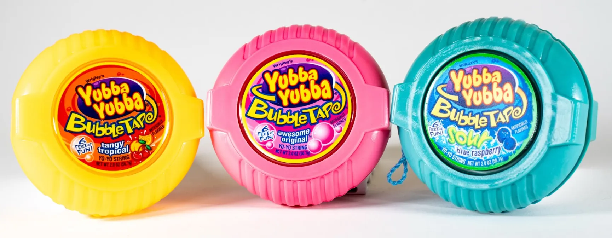
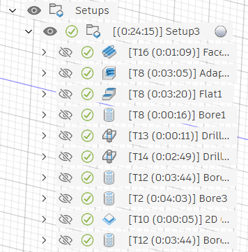
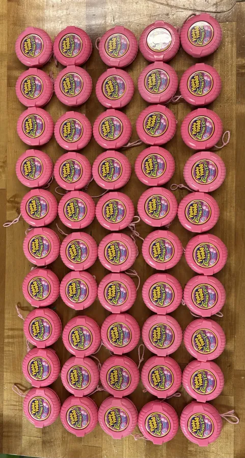

Design and Manufacturing II: Team Yubba Yubba

Overview
MIT 2.008, Design and Manufacturing II, is a hands-on course focused on modern manufacturing processes and systems, with an emphasis on evaluating production rate, quality, cost, and flexibility. I collaborated with four other students to apply these principles to the design and production of a functional yo-yo. We used processes including CNC machining, injection molding, and thermoforming to manufacture its components. The project connected product design, equipment operation, process control, and system planning to demonstrate how they work together in a real manufacturing environment.
Project goals:
- Understand the physical factors that determine production speed and process performance.
- Measure and reduce variation through process monitoring and control.
- Identify equipment, material, and system constraints that affect production.
- Integrate mechanical design, controls, and manufacturing-system planning into a complete working process.

CNC Milling
Our team designed and CNC-milled separate aluminum core and cavity molds for the yo-yo's body and outer ring. We translated the final CAD geometry into manufacturable mold halves, generated the toolpaths, machined the molds, and inspected their fit and surface quality. Below is an example of the CAD model and machining process used to produce the body core.


Thermoforming
Each half of the yo-yo used two thermoformed plastic shells with slightly different diameters, allowing the smaller shell to nest inside the larger one. A vinyl sticker was placed between the two layers, protecting it from scratches and peeling while keeping it clearly visible through the transparent plastic.


Results
Our team injection molded 100 yo-yo bodies and 100 rings, produced 100 vinyl stickers, and thermoformed 200 plastic covers to assemble 50 complete yo-yos. We measured the diameters of the molded bodies and rings to calculate the interference of the press fit. Using a nominal interference of 0.03" and the established lower and upper specification limits, 91.1%* of the possible body-and-ring combinations met the dimensional requirements.
To verify the strength of the press fit, we randomly selected 10 of the 50 completed yo-yos for drop testing. Each yo-yo was dropped from a height of four feet above the ground, and all 10 passed without separating.
*Note: After producing the required quantity of parts, we manufactured additional parts, resulting in a total of 146 bodies and 138 rings. Because any body could be paired with any ring, the analysis included 20,148 possible combinations.
